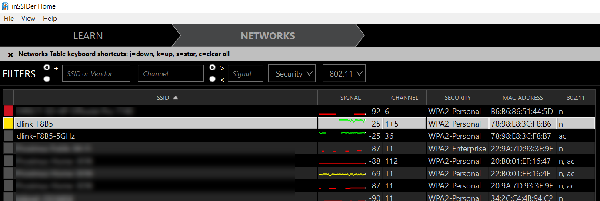

Een draadloos netwerk krijgt een naam, de Service Set Identifier of SSID. Dat is wat je
ziet staan in de lijst met netwerken op je telefoon of laptop. Het SSID van het netwerk van de hogeschool
is eduroam.

De router in het labo zendt er twee uit: een voor het netwerk op de 2,4 GHz-band en een voor dat op de 5 GHz-band. Het zijn twee aparte draadloze netwerken op hetzelfde toestel, elk met hun eigen naam, hun eigen kanaal en hun eigen instellingen.
Je vindt de SSID's van je router op meer dan één plaats terug: op de sticker onderaan het toestel, in de configuratiepagina van de router zelf, en in een scanprogramma zoals inSSIDer.
Niets belet twee netwerken om dezelfde naam te dragen. Op een campus is dat zelfs de bedoeling: alle
accesspoints van eduroam heten hetzelfde, zodat je toestel van het ene naar het andere
overschakelt terwijl je rondloopt. Wat een netwerk uniek maakt is het MAC-adres van het accesspoint,
niet de naam.
Daar hangt een risico aan vast: iemand kan een accesspoint uitzenden onder de naam van een netwerk dat jij vertrouwt. Zo'n netwerk heet een evil twin, en je zoekt het op bij de opdracht.